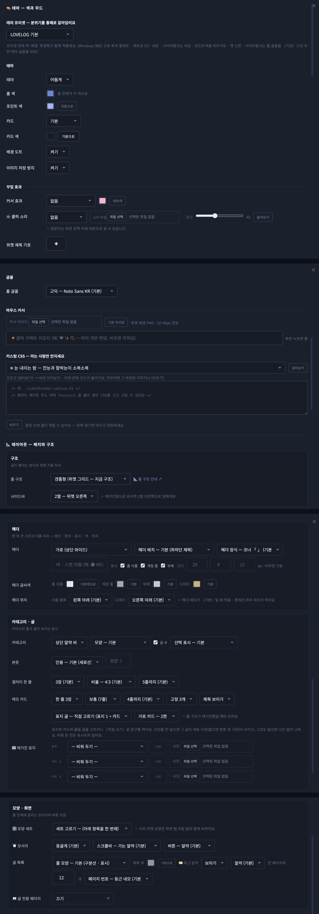
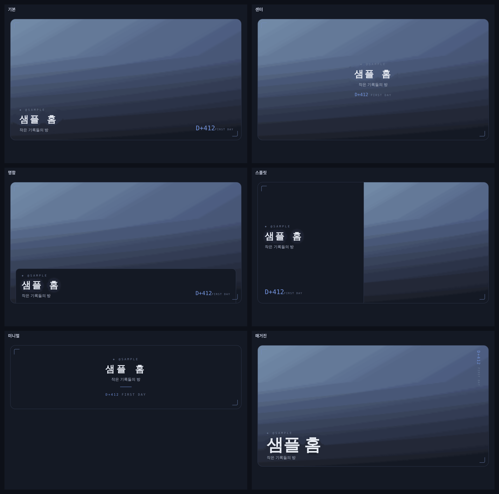

러브로그 · 꾸미기
테마·레이아웃
설정 창은 위에서 아래로 구조 → 헤더 → 카테고리·글 → 모양·화면 → 테마 프리셋 → 테마·색 → 꾸밈 효과 순서입니다. 각 덩이가 하는 일만 알면 어디를 만져야 할지 바로 보입니다.
- 구조
- 홈 구조(갠홈·블로그·매거진), 사이드바 2열/3열, 헤더를 세로 칼럼(왼쪽/오른쪽)으로 — 대문 사진이 그 칸 전체를 차지하고 스크롤을 따라옵니다.
- 헤더
- 가로형/세로형, 배치 프리셋 6종(기본·센터·명함·스플릿·미니멀·매거진), 액자 장식 7종(코너·없음·상단 띠·이중선·필름·스탬프·스캔라인), 이름·계정 줄·부제 표시와 크기·색, 이름 블록·디데이 블록 자리(9방향). 〈미니멀〉은 배너 사진을 숨기는 배치.
- 카테고리·글
- 카테고리 위치와 모양, 본문 글씨 크기(11~20px), 갤러리 한 줄 장수(1~4), 메모 카드 개수(2~4), 글 목록 줄 모양 6종(기본·번호 목차·점 리더·카드·미니멀·왼쪽 선), 제목 색, 태그 알약, 썸네일 표시, 한 페이지 글 수(3~100), 페이지 번호 모양 5종, 글 전용 페이지(글 읽을 때 위젯 접기).
- 모양·화면
- 모서리(둥근/각진/뾰족 — 카드·버튼·알약까지), 버튼 모양(BACK·더보기 — 알약·네모·글자만).
- 테마 프리셋
- 색·글꼴·효과를 한 번에 갈아입는 세트. 누른 뒤 아래에서 세부 조정.
- 테마·색
- 홈 색·포인트 색(자동/직접), 카드 색·투명화, 배경 도트, 밝은 테마, 헤더 배경 없애기(투명 PNG 헤더용), 글꼴 12종(고딕·명조·프리텐다드·수트·고운돋움·고운바탕·마루 부리·리디바탕·나눔손글씨 펜·둥근모꼴·갈무리·페이퍼로지), 이미지 저장 방지, 커스텀 CSS.
- 꾸밈 효과
- 커서 효과(✨💗🫧)·움짤 커서(GIF, PC), 컨셉 프리셋 12종(눈 내리는 밤·벚꽃·반딧불이·심해 부유물·거품·빛 입자·금빛 별가루·VHS·비 오는 창가·필름 카메라·CRT·점선 스크랩북), 🔊 클릭 소리(딸깍·톡·삑·뽁 — 방문자는 왼쪽 아래 🔇로 끔).

사진 자리img/ll-theme-panel.png
사진 자리img/ll-theme-header.png